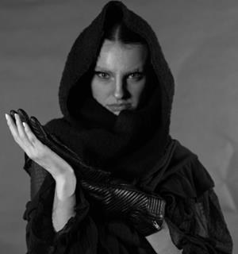
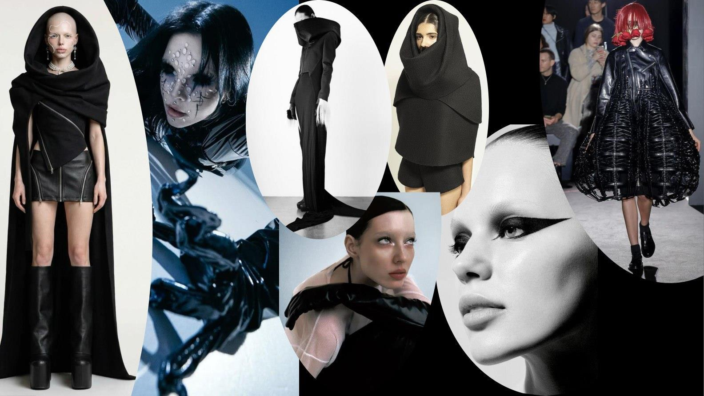
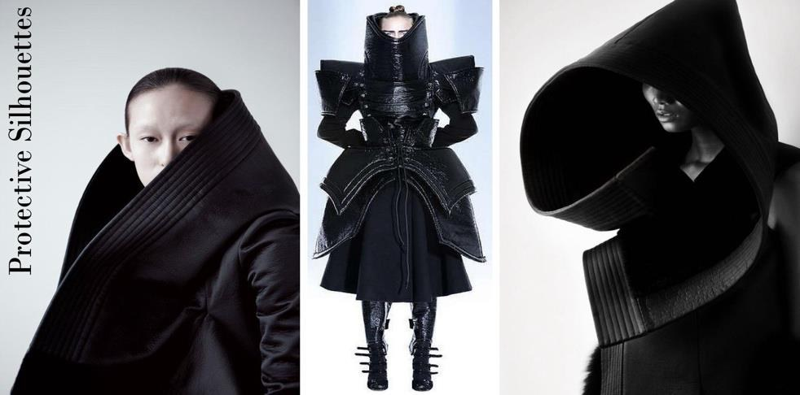
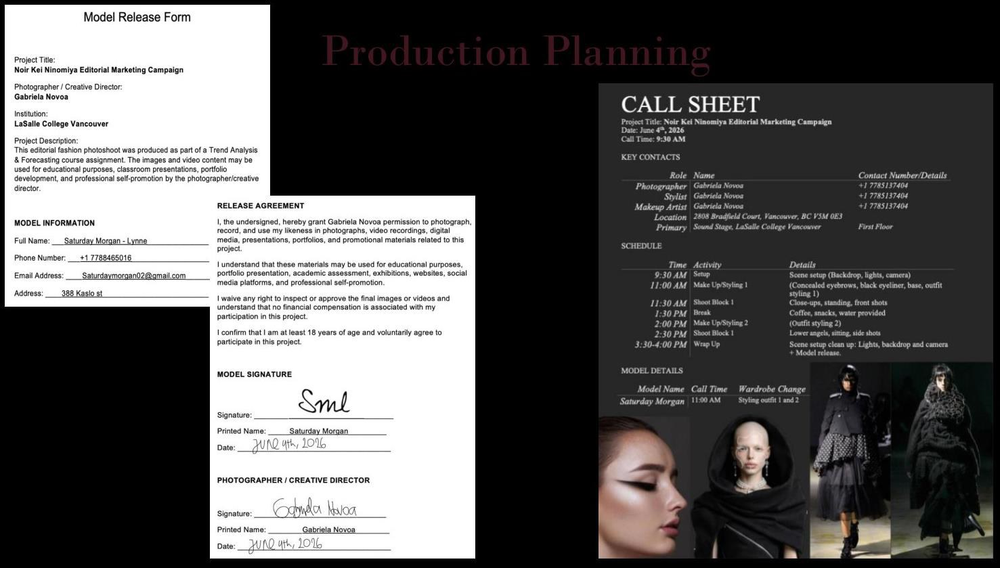
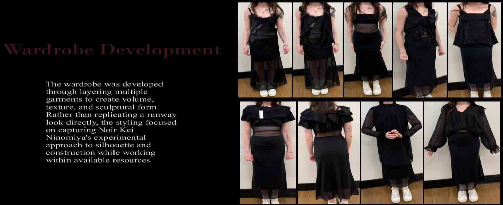
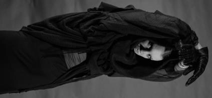
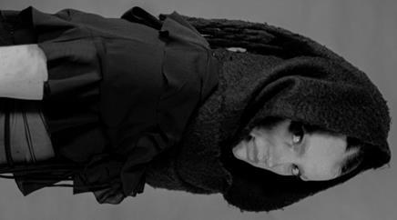

Noir Kei Ninomiya
Fashion Editorial & Creative Production
Protection, concealment and transformation.

OVERVIEW
The idea.
This independent academic editorial interprets the experimental fashion language of Noir Kei Ninomiya through ideas of protection, concealment and transformation. The concept considers fashion as both armour and personal expression, using layered black garments, wrapped silhouettes, textures and dramatic styling to shape an atmosphere of mystery. Research into the designer's brand identity informed two connected visual trends: Protective Silhouettes and Neo-Gothic Craft. I used these directions to develop styling and photographic choices rather than copying a runway collection. The project includes designer analysis, mood boards, production planning, wardrobe and makeup development, behind-the-scenes documentation, a short promotional video and five final editorial photographs. The outcome is an original student editorial study inspired by the designer, not an official campaign or collaboration.
A closer look.






PROCESS
From research
to realization.
I began by studying Noir Kei Ninomiya's design language: sculptural volume, experimental construction, layered black surfaces and clothing that can surround or conceal the body. I then identified two creative directions relevant to the shoot. Protective Silhouettes emphasizes enclosure, hoods and cocoon-like proportions. Neo-Gothic Craft focuses on dark palettes, texture and dramatic expression. Those references became the foundation for a production plan, including a call sheet and model release. I developed the wardrobe by layering garments to create new proportions and texture, and researched makeup that could support the concept without overpowering the clothing. The shoot required decisions about lighting, framing, atmosphere and how each photograph would relate to the others. I documented preparation and behind-the-scenes moments, created a short promotional video and selected five final editorial images. The principal challenge was translating an ambitious, experimental runway aesthetic into a believable original visual story with the resources available to a student production.
REFLECTION
What I learned.
This project showed me how many decisions are involved in creating a coherent fashion editorial. The final images depend not only on the camera, but also on research, styling, production planning, makeup and collaboration. The main challenge was adapting the designer's highly sculptural identity without access to runway garments or a large production budget. I learned to focus on the visual principles underlying the inspiration rather than attempting a literal reproduction. Selecting the final photographs as a sequence was also valuable: every image needed to contribute to the same mood while offering something different. The experience reinforced my interest in fashion imagery, creative production and the development of visual narratives.